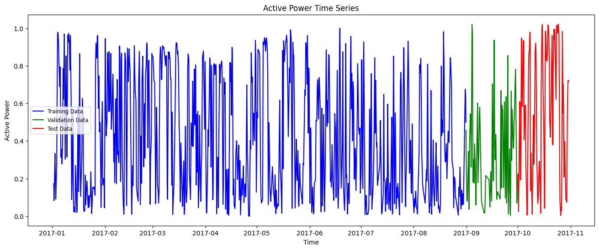
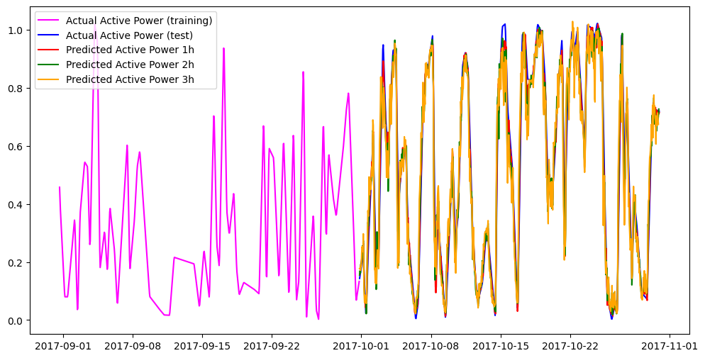

import pandas as pd
import numpy as np
import matplotlib.pyplot as plt
import time
import logging
from sklearn.preprocessing import MinMaxScaler
from sklearn.preprocessing import StandardScaler
from sklearn.model_selection import train_test_split
from sklearn.metrics import mean_absolute_error
XGBoost Forecasting with Nixtla’s MLForecast
Dataset: KaggleWPGD
This notebook demonstrates how to use the XGBoost forecasting model with the implementation provided by Nixtla’s MLForecast library:
Important note:
This notebook uses the following conda environments:
- Under linux: tfm_cc, described in the tfm_cc.yml file (see environments folder).
- Under macOS: tfm_cc_nixtla, described in the tfm_cc_nixtla.yml file (see environments folder).
Execution Notes:
The run times that appear below correspond to the execution of the notebook in a Mac M2 machine, 16GB of RAM.
Load basic libraries
Warning: Model specific libraries will be loaded below.
Load dataset
The data in this notebook comes from the Kaggle dataset:
Wind Power Generation Data - Forecasting
file_path = "../../data/kaggleWPGD/Location1.csv"
df = pd.read_csv(file_path, delimiter=',')
df.head()| Time | temperature_2m | relativehumidity_2m | dewpoint_2m | windspeed_10m | windspeed_100m | winddirection_10m | winddirection_100m | windgusts_10m | Power | |
|---|---|---|---|---|---|---|---|---|---|---|
| 0 | 2017-01-02 00:00:00 | 28.5 | 85 | 24.5 | 1.44 | 1.26 | 146 | 162 | 1.4 | 0.1635 |
| 1 | 2017-01-02 01:00:00 | 28.4 | 86 | 24.7 | 2.06 | 3.99 | 151 | 158 | 4.4 | 0.1424 |
| 2 | 2017-01-02 02:00:00 | 26.8 | 91 | 24.5 | 1.30 | 2.78 | 148 | 150 | 3.2 | 0.1214 |
| 3 | 2017-01-02 03:00:00 | 27.4 | 88 | 24.3 | 1.30 | 2.69 | 58 | 105 | 1.6 | 0.1003 |
| 4 | 2017-01-02 04:00:00 | 27.3 | 88 | 24.1 | 2.47 | 4.43 | 58 | 84 | 4.0 | 0.0793 |
Set datetime format and index
df['time'] = pd.to_datetime(df['Time'], format='%Y-%m-%d %H:%M:00')
df.drop(columns=['Time'], inplace=True)
df.set_index('time', inplace=True)
df.head()| temperature_2m | relativehumidity_2m | dewpoint_2m | windspeed_10m | windspeed_100m | winddirection_10m | winddirection_100m | windgusts_10m | Power | |
|---|---|---|---|---|---|---|---|---|---|
| time | |||||||||
| 2017-01-02 00:00:00 | 28.5 | 85 | 24.5 | 1.44 | 1.26 | 146 | 162 | 1.4 | 0.1635 |
| 2017-01-02 01:00:00 | 28.4 | 86 | 24.7 | 2.06 | 3.99 | 151 | 158 | 4.4 | 0.1424 |
| 2017-01-02 02:00:00 | 26.8 | 91 | 24.5 | 1.30 | 2.78 | 148 | 150 | 3.2 | 0.1214 |
| 2017-01-02 03:00:00 | 27.4 | 88 | 24.3 | 1.30 | 2.69 | 58 | 105 | 1.6 | 0.1003 |
| 2017-01-02 04:00:00 | 27.3 | 88 | 24.1 | 2.47 | 4.43 | 58 | 84 | 4.0 | 0.0793 |
df.info()<class 'pandas.core.frame.DataFrame'>
DatetimeIndex: 43800 entries, 2017-01-02 00:00:00 to 2021-12-31 23:00:00
Data columns (total 9 columns):
# Column Non-Null Count Dtype
--- ------ -------------- -----
0 temperature_2m 43800 non-null float64
1 relativehumidity_2m 43800 non-null int64
2 dewpoint_2m 43800 non-null float64
3 windspeed_10m 43800 non-null float64
4 windspeed_100m 43800 non-null float64
5 winddirection_10m 43800 non-null int64
6 winddirection_100m 43800 non-null int64
7 windgusts_10m 43800 non-null float64
8 Power 43800 non-null float64
dtypes: float64(6), int64(3)
memory usage: 3.3 MBSelect a subset of the data
df = df.head(7248)Rename the columns
initial_columns = df.columns.tolist()
initial_columns['temperature_2m',
'relativehumidity_2m',
'dewpoint_2m',
'windspeed_10m',
'windspeed_100m',
'winddirection_10m',
'winddirection_100m',
'windgusts_10m',
'Power']df.rename(columns={'Power' : 'Active_Power', 'windspeed_10m' : 'Wind_speed_tower'}, inplace=True)
df = df[['Active_Power', 'Wind_speed_tower']]
df| Active_Power | Wind_speed_tower | |
|---|---|---|
| time | ||
| 2017-01-02 00:00:00 | 0.1635 | 1.44 |
| 2017-01-02 01:00:00 | 0.1424 | 2.06 |
| 2017-01-02 02:00:00 | 0.1214 | 1.30 |
| 2017-01-02 03:00:00 | 0.1003 | 1.30 |
| 2017-01-02 04:00:00 | 0.0793 | 2.47 |
| ... | ... | ... |
| 2017-10-30 19:00:00 | 0.6847 | 5.89 |
| 2017-10-30 20:00:00 | 0.6841 | 6.32 |
| 2017-10-30 21:00:00 | 0.6834 | 6.52 |
| 2017-10-30 22:00:00 | 0.6828 | 6.33 |
| 2017-10-30 23:00:00 | 0.6822 | 6.15 |
7248 rows × 2 columns
Check for missing values and duplicated dates
There are no missing data in this dataset
print(df.isna().sum())Active_Power 0
Wind_speed_tower 0
dtype: int64duplicate_dates = df.index[df.index.duplicated(keep='first')]
print(f"Number of duplicate timestamps: {len(duplicate_dates)}")
print(duplicate_dates)Number of duplicate timestamps: 0
DatetimeIndex([], dtype='datetime64[ns]', name='time', freq=None)expected = pd.date_range(start=df.index.min(), end=df.index.max(), freq='h')
missing = expected.difference(df.index)
print("Missing timestamps:", missing)
Missing timestamps: DatetimeIndex([], dtype='datetime64[ns]', freq='h')missing_df = pd.DataFrame({'missing':missing})
missing_df['date'] = missing_df['missing'].dt.date
missing_df.value_counts('date').sort_index()Series([], Name: count, dtype: int64)Target and exogenous variables
target = 'Active_Power'
features = [col for col in df.columns if col != target]
features = features[:1]
features['Wind_speed_tower']df = df[features + [target]]
df| Wind_speed_tower | Active_Power | |
|---|---|---|
| time | ||
| 2017-01-02 00:00:00 | 1.44 | 0.1635 |
| 2017-01-02 01:00:00 | 2.06 | 0.1424 |
| 2017-01-02 02:00:00 | 1.30 | 0.1214 |
| 2017-01-02 03:00:00 | 1.30 | 0.1003 |
| 2017-01-02 04:00:00 | 2.47 | 0.0793 |
| ... | ... | ... |
| 2017-10-30 19:00:00 | 5.89 | 0.6847 |
| 2017-10-30 20:00:00 | 6.32 | 0.6841 |
| 2017-10-30 21:00:00 | 6.52 | 0.6834 |
| 2017-10-30 22:00:00 | 6.33 | 0.6828 |
| 2017-10-30 23:00:00 | 6.15 | 0.6822 |
7248 rows × 2 columns
Train / Validation / Test split
We select the following lengths for the train, validation, and test sets:
int(np.ceil(df.shape[0] * 0.8))5799train_len = 5800 # approx int(np.ceil(df.shape[0] * 0.8))
print(f"Train length: {train_len}")
val_len = (df.shape[0] - train_len) // 2
print(f"Validation length: {val_len}")
test_len = df.shape[0] - train_len - val_len
print(f"Test length: {test_len}")Train length: 5800
Validation length: 724
Test length: 724And we split the time series into train, validation, and test sets:
train_df = df.iloc[:train_len]
train_df| Wind_speed_tower | Active_Power | |
|---|---|---|
| time | ||
| 2017-01-02 00:00:00 | 1.44 | 0.1635 |
| 2017-01-02 01:00:00 | 2.06 | 0.1424 |
| 2017-01-02 02:00:00 | 1.30 | 0.1214 |
| 2017-01-02 03:00:00 | 1.30 | 0.1003 |
| 2017-01-02 04:00:00 | 2.47 | 0.0793 |
| ... | ... | ... |
| 2017-08-31 11:00:00 | 4.83 | 0.6155 |
| 2017-08-31 12:00:00 | 5.15 | 0.5935 |
| 2017-08-31 13:00:00 | 5.47 | 0.5536 |
| 2017-08-31 14:00:00 | 5.61 | 0.5137 |
| 2017-08-31 15:00:00 | 5.79 | 0.4738 |
5800 rows × 2 columns
val_df = df.iloc[train_len:(train_len + val_len)]
val_df| Wind_speed_tower | Active_Power | |
|---|---|---|
| time | ||
| 2017-08-31 16:00:00 | 5.87 | 0.4339 |
| 2017-08-31 17:00:00 | 5.19 | 0.3940 |
| 2017-08-31 18:00:00 | 4.26 | 0.3605 |
| 2017-08-31 19:00:00 | 2.21 | 0.3334 |
| 2017-08-31 20:00:00 | 2.55 | 0.3063 |
| ... | ... | ... |
| 2017-09-30 15:00:00 | 2.12 | 0.0907 |
| 2017-09-30 16:00:00 | 2.42 | 0.0991 |
| 2017-09-30 17:00:00 | 2.10 | 0.1076 |
| 2017-09-30 18:00:00 | 2.20 | 0.1166 |
| 2017-09-30 19:00:00 | 1.97 | 0.1262 |
724 rows × 2 columns
test_df = df.iloc[(train_len + val_len):]
test_df| Wind_speed_tower | Active_Power | |
|---|---|---|
| time | ||
| 2017-09-30 20:00:00 | 1.80 | 0.1357 |
| 2017-09-30 21:00:00 | 1.71 | 0.1453 |
| 2017-09-30 22:00:00 | 1.44 | 0.1548 |
| 2017-09-30 23:00:00 | 1.40 | 0.1644 |
| 2017-10-01 00:00:00 | 2.20 | 0.1739 |
| ... | ... | ... |
| 2017-10-30 19:00:00 | 5.89 | 0.6847 |
| 2017-10-30 20:00:00 | 6.32 | 0.6841 |
| 2017-10-30 21:00:00 | 6.52 | 0.6834 |
| 2017-10-30 22:00:00 | 6.33 | 0.6828 |
| 2017-10-30 23:00:00 | 6.15 | 0.6822 |
724 rows × 2 columns
Time series split visualization
plt.figure(figsize=(16, 6))
plt.plot(train_df["Active_Power"], label="Training Data", color='blue')
plt.plot(val_df["Active_Power"], label="Validation Data", color='green')
plt.plot(test_df["Active_Power"], label="Test Data", color='red')
plt.title("Active Power Time Series")
plt.xlabel("Time")
plt.ylabel("Active Power")
plt.legend(fontsize='small')
plt.show();plt.close()
We will also create copies of the train, validation, and test sets to use them later in the notebook.
train_df_original = train_df.copy()
val_df_original = val_df.copy()
test_df_original = test_df.copy()Data scaling
We apply the min-max scaler fitted to the training set to the train, validation, and test sets (to avoid data leakage).
from sklearn.preprocessing import MinMaxScaler
scaler = MinMaxScaler()
scaler.set_output(transform='pandas')
scaler.fit(train_df)
train_df = scaler.transform(train_df)
val_df = scaler.transform(val_df)
test_df = scaler.transform(test_df)Let us check the result
train_df.describe().transpose()| count | mean | std | min | 25% | 50% | 75% | max | |
|---|---|---|---|---|---|---|---|---|
| Wind_speed_tower | 5800.0 | 0.275745 | 0.127310 | 0.0 | 0.184488 | 0.249247 | 0.348645 | 1.0 |
| Active_Power | 5800.0 | 0.407862 | 0.287194 | 0.0 | 0.149394 | 0.349394 | 0.669188 | 1.0 |
Nixtla Dataset Format
Convert to NeuralForecast format (ds, y, unique_id)
train_df_nf = train_df.copy()
train_df_nf = train_df_nf.rename(columns={target: 'y'})
train_df_nf['ds'] = train_df_nf.index
train_df_nf['unique_id'] = 'series_1'Move ds and unique_id to front
train_df_nf = train_df_nf[['unique_id', 'ds', 'y'] + features]
train_df_nf| unique_id | ds | y | Wind_speed_tower | |
|---|---|---|---|---|
| time | ||||
| 2017-01-02 00:00:00 | series_1 | 2017-01-02 00:00:00 | 0.172377 | 0.108434 |
| 2017-01-02 01:00:00 | series_1 | 2017-01-02 01:00:00 | 0.150132 | 0.155120 |
| 2017-01-02 02:00:00 | series_1 | 2017-01-02 02:00:00 | 0.127992 | 0.097892 |
| 2017-01-02 03:00:00 | series_1 | 2017-01-02 03:00:00 | 0.105746 | 0.097892 |
| 2017-01-02 04:00:00 | series_1 | 2017-01-02 04:00:00 | 0.083606 | 0.185994 |
| ... | ... | ... | ... | ... |
| 2017-08-31 11:00:00 | series_1 | 2017-08-31 11:00:00 | 0.648919 | 0.363705 |
| 2017-08-31 12:00:00 | series_1 | 2017-08-31 12:00:00 | 0.625725 | 0.387801 |
| 2017-08-31 13:00:00 | series_1 | 2017-08-31 13:00:00 | 0.583658 | 0.411898 |
| 2017-08-31 14:00:00 | series_1 | 2017-08-31 14:00:00 | 0.541592 | 0.422440 |
| 2017-08-31 15:00:00 | series_1 | 2017-08-31 15:00:00 | 0.499526 | 0.435994 |
5800 rows × 4 columns
Same for validation and test sets
val_df_nf = val_df.copy()
val_df_nf = val_df_nf.rename(columns={target: 'y'})
val_df_nf['ds'] = val_df_nf.index
val_df_nf['unique_id'] = 'series_1'
val_df_nf = val_df_nf[['unique_id', 'ds', 'y'] + features]
val_df_nf| unique_id | ds | y | Wind_speed_tower | |
|---|---|---|---|---|
| time | ||||
| 2017-08-31 16:00:00 | series_1 | 2017-08-31 16:00:00 | 0.457459 | 0.442018 |
| 2017-08-31 17:00:00 | series_1 | 2017-08-31 17:00:00 | 0.415393 | 0.390813 |
| 2017-08-31 18:00:00 | series_1 | 2017-08-31 18:00:00 | 0.380074 | 0.320783 |
| 2017-08-31 19:00:00 | series_1 | 2017-08-31 19:00:00 | 0.351502 | 0.166416 |
| 2017-08-31 20:00:00 | series_1 | 2017-08-31 20:00:00 | 0.322931 | 0.192018 |
| ... | ... | ... | ... | ... |
| 2017-09-30 15:00:00 | series_1 | 2017-09-30 15:00:00 | 0.095625 | 0.159639 |
| 2017-09-30 16:00:00 | series_1 | 2017-09-30 16:00:00 | 0.104481 | 0.182229 |
| 2017-09-30 17:00:00 | series_1 | 2017-09-30 17:00:00 | 0.113442 | 0.158133 |
| 2017-09-30 18:00:00 | series_1 | 2017-09-30 18:00:00 | 0.122931 | 0.165663 |
| 2017-09-30 19:00:00 | series_1 | 2017-09-30 19:00:00 | 0.133052 | 0.148343 |
724 rows × 4 columns
test_df_nf = test_df.copy()
test_df_nf = test_df_nf.rename(columns={target: 'y'})
test_df_nf['ds'] = test_df_nf.index
test_df_nf['unique_id'] = 'series_1'
test_df_nf = test_df_nf[['unique_id', 'ds', 'y'] + features]
test_df_nf| unique_id | ds | y | Wind_speed_tower | |
|---|---|---|---|---|
| time | ||||
| 2017-09-30 20:00:00 | series_1 | 2017-09-30 20:00:00 | 0.143068 | 0.135542 |
| 2017-09-30 21:00:00 | series_1 | 2017-09-30 21:00:00 | 0.153189 | 0.128765 |
| 2017-09-30 22:00:00 | series_1 | 2017-09-30 22:00:00 | 0.163205 | 0.108434 |
| 2017-09-30 23:00:00 | series_1 | 2017-09-30 23:00:00 | 0.173326 | 0.105422 |
| 2017-10-01 00:00:00 | series_1 | 2017-10-01 00:00:00 | 0.183342 | 0.165663 |
| ... | ... | ... | ... | ... |
| 2017-10-30 19:00:00 | series_1 | 2017-10-30 19:00:00 | 0.721877 | 0.443524 |
| 2017-10-30 20:00:00 | series_1 | 2017-10-30 20:00:00 | 0.721244 | 0.475904 |
| 2017-10-30 21:00:00 | series_1 | 2017-10-30 21:00:00 | 0.720506 | 0.490964 |
| 2017-10-30 22:00:00 | series_1 | 2017-10-30 22:00:00 | 0.719873 | 0.476657 |
| 2017-10-30 23:00:00 | series_1 | 2017-10-30 23:00:00 | 0.719241 | 0.463102 |
724 rows × 4 columns
Create a joint dataset with train and validation to fit into Nixtla’s framework.
train_val_df = pd.concat([train_df_nf, val_df_nf], axis=0)
train_val_df.reset_index(drop=True, inplace=True)
train_val_df.info()<class 'pandas.core.frame.DataFrame'>
RangeIndex: 6524 entries, 0 to 6523
Data columns (total 4 columns):
# Column Non-Null Count Dtype
--- ------ -------------- -----
0 unique_id 6524 non-null object
1 ds 6524 non-null datetime64[ns]
2 y 6524 non-null float64
3 Wind_speed_tower 6524 non-null float64
dtypes: datetime64[ns](1), float64(2), object(1)
memory usage: 204.0+ KBAnd similarly a full dataset with train, validation and test sets.
full_df_nf = pd.concat([train_df_nf, val_df_nf, test_df_nf], axis=0)
full_df_nf.reset_index(drop=True, inplace=True)
full_df_nf.info()<class 'pandas.core.frame.DataFrame'>
RangeIndex: 7248 entries, 0 to 7247
Data columns (total 4 columns):
# Column Non-Null Count Dtype
--- ------ -------------- -----
0 unique_id 7248 non-null object
1 ds 7248 non-null datetime64[ns]
2 y 7248 non-null float64
3 Wind_speed_tower 7248 non-null float64
dtypes: datetime64[ns](1), float64(2), object(1)
memory usage: 226.6+ KBSet the forecast horizon and input length
horizon = 3
input_size = 6XGBoost
Let us load the required libraries for the XGBoost model.
from mlforecast import MLForecast
from mlforecast.auto import AutoModel, AutoXGBoost, AutoMLForecast
import optuna
import xgboost as xgb
# train_val_df.tail(10)We create a dictionary to store the predictions of the XGBoost models for each prediction horizon.
preds_df = {}And another one to store the fitted models and their parameters
xgb_dict = {}Next we create a function that will define the hyperparameter grid for the Optuna optimization process of the XGBoost models.
def xgb_forecasting_params(trial):
return {
'n_estimators': trial.suggest_int('n_estimators', 100, 1000),
'max_depth': trial.suggest_int('max_depth', 3, 12),
'learning_rate': trial.suggest_float('learning_rate', 0.01, 0.3, log=True),
'subsample': trial.suggest_float('subsample', 0.5, 1.0),
'colsample_bytree': trial.suggest_float('colsample_bytree', 0.5, 1.0),
'gamma': trial.suggest_float('gamma', 0.0, 5.0),
'min_child_weight': trial.suggest_int('min_child_weight', 1, 20),
'reg_alpha': trial.suggest_float('reg_alpha', 0.0, 5.0),
'reg_lambda': trial.suggest_float('reg_lambda', 0.0, 5.0),
'random_state': 42,
'tree_method': 'hist', # more efficient for large datasets
'verbosity': 0
}%%capture --no-stderr --no-display
start_time = time.time()
import warnings
warnings.simplefilter(action='ignore', category=FutureWarning)
logging.getLogger("lightning_fabric.utilities.seed").setLevel(logging.WARNING)
optuna.logging.set_verbosity(optuna.logging.ERROR)
# The following loop processes each horizon from 1 to the maximum specified horizon value.
for h in range(1, horizon + 1):
# for h in range(1, 2):
# Initialize the dictionary to store models and parameters for each horizon
xgb_dict[f'{h}h'] = {}
print(f"Processing horizon: {h}h")
# Create a copy of the full DataFrame for the current horizon
full_df_nf_h = full_df_nf.copy()
# Create the target variable by shifting the 'y' column by 'h' hours into the future (negative lags)
full_df_nf_h['h_target'] = full_df_nf_h['y'].shift(-h)
# Also create lagged features for the 'Wind_speed_tower' column
# making sure that each model only has access to past values of wind
for k in range(1, horizon + 1):
full_df_nf_h[f'Wind_speed_tower_lag{k}'] = full_df_nf_h['Wind_speed_tower'].shift(k)
# Remove the non-lagged columns and rename the target column
full_df_nf_h.drop(columns=['y', 'Wind_speed_tower'], inplace=True)
full_df_nf_h.rename(columns={'h_target': 'y'}, inplace=True)
# Select the data corresponding to the train and validation sets
train_val_df_h = full_df_nf_h.head(train_val_df.shape[0]).copy()
# Use init_config to pass the lags of the target variable to the auto model
def my_init_config(trial: optuna.Trial):
return {
'lags': range(1 + h, input_size + 1 + h)
}
# Use fit_config to indicate that all the features (Wind) are dynamic features
def my_fit_config(trial: optuna.Trial):
return {
'static_features': []
}
# Now define an auto model for XGBoost with the specified configurations
auto_xgb = AutoMLForecast(
models={'xgb': AutoXGBoost()},
freq='H',
init_config=my_init_config,
fit_config=my_fit_config,
num_threads=1)
# Fit the model on the training and validation data (Optuna optimized)
auto_xgb.fit(train_val_df_h,
h = 1,
num_samples= 20,
n_windows=10)
# Get optimal parameters, and store the model
xgb_dict[f'{h}h']['model'] = auto_xgb.models['xgb'].model
xgb_dict[f'{h}h']['best_params'] = auto_xgb.results_['xgb'].best_params
# Now use that optimized model (as a regular model) to make predictions
# These are **one-step-ahead predictions of the future-lagged output**
fcst = MLForecast(
models=[xgb_dict[f'{h}h']['model']],
freq='H',
lags=range(1 + h, input_size + 1 + h),
num_threads=1)
# The value of n moves across the test set, predicting one step at a time
# We use the first row (n = 0) of the test set to initialize the output DataFrame
n = 0
# This is the data used for the 0-th prediction
train_val_df_h_n = full_df_nf_h.head(train_val_df.shape[0] + n).copy()
# Fit the optimal model to that data
fcst.fit(train_val_df_h_n, static_features=[])
# Also define the X_df DataFrame, which contains the features for the 0-th prediction
X_df=full_df_nf_h.head(train_val_df_h_n.shape[0] + 1).drop(columns=['y'])
# Predict and use the predictions to initialize the output DataFrame
preds_df[f'{h}h'] = fcst.predict(h = 1, X_df=X_df)
# This loop iterates over the remaining rows of the test set, predicting one step at a time
# using the same steps
for n in range(1, test_df_nf.shape[0] - h + 1):
# Data for n-th row
train_val_df_h_n = full_df_nf_h.head(train_val_df.shape[0] + n).copy()
# Fit the model to the data for n-th row
fcst.fit(train_val_df_h_n, static_features=[])
# Define the X_df DataFrame for the n-th prediction
X_df = full_df_nf_h.head(train_val_df_h_n.shape[0] + n).drop(columns=['y'])
# Predict the next step using the fitted model and the X_df DataFrame
# and concatenate the predictions to the output DataFrame
preds_df[f'{h}h'] = pd.concat([preds_df[f'{h}h'], fcst.predict(h = 1, X_df=X_df)], axis=0)
# When the predictions are done, we rename the columns and set the index
preds_df[f'{h}h'].rename(columns={'XGBRegressor': f'pred_{h}h'}, inplace=True)
preds_df[f'{h}h'].set_index('ds', inplace=True)
end_time = time.time()
elapsed_time = end_time - start_timeprint(f"Elapsed time: {elapsed_time / 60:.2f} minutes")Let us take a look at the hyperparameter selected by Optuna for the XGBoost models for each prediction horizon.
xgb_dict['1h']['best_params']{'n_estimators': 372,
'max_depth': 5,
'learning_rate': 0.040296776607459256,
'subsample': 0.15420292446634284,
'colsample_bytree': 0.700090043901101,
'reg_lambda': 0.002317944093186113,
'reg_alpha': 4.820149280505929e-07,
'min_child_weight': 3}xgb_dict['2h']['best_params']{'n_estimators': 694,
'max_depth': 7,
'learning_rate': 0.018032874318828725,
'subsample': 0.37015182697338095,
'colsample_bytree': 0.7079907203542237,
'reg_lambda': 1.09689218247655e-08,
'reg_alpha': 9.077275833621343e-06,
'min_child_weight': 6}xgb_dict['3h']['best_params']{'n_estimators': 262,
'max_depth': 10,
'learning_rate': 0.01830957539375179,
'subsample': 0.8711861931788317,
'colsample_bytree': 0.6342927711041051,
'reg_lambda': 0.004195102168027593,
'reg_alpha': 5.442505599655872e-06,
'min_child_weight': 7}Model Performance Evaluation
Let us also look at the prediction dataframes for the XGBoost models for each prediction horizon.
preds_df['1h']| unique_id | pred_1h | |
|---|---|---|
| ds | ||
| 2017-09-30 20:00:00 | series_1 | 0.155094 |
| 2017-09-30 21:00:00 | series_1 | 0.163852 |
| 2017-09-30 22:00:00 | series_1 | 0.168162 |
| 2017-09-30 23:00:00 | series_1 | 0.189998 |
| 2017-10-01 00:00:00 | series_1 | 0.195466 |
| ... | ... | ... |
| 2017-10-30 19:00:00 | series_1 | 0.713319 |
| 2017-10-30 20:00:00 | series_1 | 0.715375 |
| 2017-10-30 21:00:00 | series_1 | 0.717366 |
| 2017-10-30 22:00:00 | series_1 | 0.709799 |
| 2017-10-30 23:00:00 | series_1 | 0.714499 |
724 rows × 2 columns
preds_df['2h']| unique_id | pred_2h | |
|---|---|---|
| ds | ||
| 2017-09-30 20:00:00 | series_1 | 0.155557 |
| 2017-09-30 21:00:00 | series_1 | 0.170095 |
| 2017-09-30 22:00:00 | series_1 | 0.162096 |
| 2017-09-30 23:00:00 | series_1 | 0.193209 |
| 2017-10-01 00:00:00 | series_1 | 0.194572 |
| ... | ... | ... |
| 2017-10-30 18:00:00 | series_1 | 0.694724 |
| 2017-10-30 19:00:00 | series_1 | 0.695877 |
| 2017-10-30 20:00:00 | series_1 | 0.685921 |
| 2017-10-30 21:00:00 | series_1 | 0.703963 |
| 2017-10-30 22:00:00 | series_1 | 0.726853 |
723 rows × 2 columns
preds_df['3h']| unique_id | pred_3h | |
|---|---|---|
| ds | ||
| 2017-09-30 20:00:00 | series_1 | 0.177818 |
| 2017-09-30 21:00:00 | series_1 | 0.179062 |
| 2017-09-30 22:00:00 | series_1 | 0.171251 |
| 2017-09-30 23:00:00 | series_1 | 0.190027 |
| 2017-10-01 00:00:00 | series_1 | 0.184554 |
| ... | ... | ... |
| 2017-10-30 17:00:00 | series_1 | 0.694885 |
| 2017-10-30 18:00:00 | series_1 | 0.670041 |
| 2017-10-30 19:00:00 | series_1 | 0.713533 |
| 2017-10-30 20:00:00 | series_1 | 0.692928 |
| 2017-10-30 21:00:00 | series_1 | 0.674449 |
722 rows × 2 columns
And let us plot the predictions of the XGBoost models for each prediction horizon.
%matplotlib inline
plt.figure(figsize=(12, 6))
plt.plot(val_df_nf["y"], label="Actual Active Power (training)", color='magenta')
plt.plot(test_df_nf["y"], label="Actual Active Power (test)", color='blue')
for h in range(1, horizon + 1):
colors = ['red', 'green', 'orange', 'purple', 'brown', 'cyan']
plt.plot(
preds_df[f'{h}h'][f'pred_{h}h'],
label=f"Predicted Active Power {h}h",
color=colors[(h - 1) % len(colors)]
)
plt.legend()
plt.show();plt.close()
MAE computation
We will next compute the MAE for each of the predictions in the dictionary.
from sklearn.metrics import mean_absolute_errorMae for 1h preddictions
mae1h_df = preds_df['1h'].copy()[['pred_1h']]
mae1h_df| pred_1h | |
|---|---|
| ds | |
| 2017-09-30 20:00:00 | 0.155094 |
| 2017-09-30 21:00:00 | 0.163852 |
| 2017-09-30 22:00:00 | 0.168162 |
| 2017-09-30 23:00:00 | 0.189998 |
| 2017-10-01 00:00:00 | 0.195466 |
| ... | ... |
| 2017-10-30 19:00:00 | 0.713319 |
| 2017-10-30 20:00:00 | 0.715375 |
| 2017-10-30 21:00:00 | 0.717366 |
| 2017-10-30 22:00:00 | 0.709799 |
| 2017-10-30 23:00:00 | 0.714499 |
724 rows × 1 columns
We need to add the exogenous variables as they were used by the scaler.
mae1h_df.insert(0, 'Wind_speed_tower', test_df_nf['Wind_speed_tower'].values)
mae1h_df| Wind_speed_tower | pred_1h | |
|---|---|---|
| ds | ||
| 2017-09-30 20:00:00 | 0.135542 | 0.155094 |
| 2017-09-30 21:00:00 | 0.128765 | 0.163852 |
| 2017-09-30 22:00:00 | 0.108434 | 0.168162 |
| 2017-09-30 23:00:00 | 0.105422 | 0.189998 |
| 2017-10-01 00:00:00 | 0.165663 | 0.195466 |
| ... | ... | ... |
| 2017-10-30 19:00:00 | 0.443524 | 0.713319 |
| 2017-10-30 20:00:00 | 0.475904 | 0.715375 |
| 2017-10-30 21:00:00 | 0.490964 | 0.717366 |
| 2017-10-30 22:00:00 | 0.476657 | 0.709799 |
| 2017-10-30 23:00:00 | 0.463102 | 0.714499 |
724 rows × 2 columns
# mae1h_df.columns = ["Wind_speed_tower", "Active_Power"]
mean_absolute_error(scaler.inverse_transform(mae1h_df)[:,1], test_df_original["Active_Power"])0.027960592472690768Mae for 2h preddictions
mae2h_df = preds_df['2h'].copy()[['pred_2h']]
mae2h_df| pred_2h | |
|---|---|
| ds | |
| 2017-09-30 20:00:00 | 0.155557 |
| 2017-09-30 21:00:00 | 0.170095 |
| 2017-09-30 22:00:00 | 0.162096 |
| 2017-09-30 23:00:00 | 0.193209 |
| 2017-10-01 00:00:00 | 0.194572 |
| ... | ... |
| 2017-10-30 18:00:00 | 0.694724 |
| 2017-10-30 19:00:00 | 0.695877 |
| 2017-10-30 20:00:00 | 0.685921 |
| 2017-10-30 21:00:00 | 0.703963 |
| 2017-10-30 22:00:00 | 0.726853 |
723 rows × 1 columns
mae2h_df.insert(0, 'Wind_speed_tower', test_df_nf['Wind_speed_tower'].values[:-1])
mae2h_df| Wind_speed_tower | pred_2h | |
|---|---|---|
| ds | ||
| 2017-09-30 20:00:00 | 0.135542 | 0.155557 |
| 2017-09-30 21:00:00 | 0.128765 | 0.170095 |
| 2017-09-30 22:00:00 | 0.108434 | 0.162096 |
| 2017-09-30 23:00:00 | 0.105422 | 0.193209 |
| 2017-10-01 00:00:00 | 0.165663 | 0.194572 |
| ... | ... | ... |
| 2017-10-30 18:00:00 | 0.476657 | 0.694724 |
| 2017-10-30 19:00:00 | 0.443524 | 0.695877 |
| 2017-10-30 20:00:00 | 0.475904 | 0.685921 |
| 2017-10-30 21:00:00 | 0.490964 | 0.703963 |
| 2017-10-30 22:00:00 | 0.476657 | 0.726853 |
723 rows × 2 columns
# mae1h_df.columns = ["Wind_speed_tower", "Active_Power"]
mean_absolute_error(scaler.inverse_transform(mae2h_df)[:,1], test_df_original["Active_Power"][:-1])0.047820639583508885Mae for 3h preddictions
mae3h_df = preds_df['3h'].copy()[['pred_3h']]
mae3h_df| pred_3h | |
|---|---|
| ds | |
| 2017-09-30 20:00:00 | 0.177818 |
| 2017-09-30 21:00:00 | 0.179062 |
| 2017-09-30 22:00:00 | 0.171251 |
| 2017-09-30 23:00:00 | 0.190027 |
| 2017-10-01 00:00:00 | 0.184554 |
| ... | ... |
| 2017-10-30 17:00:00 | 0.694885 |
| 2017-10-30 18:00:00 | 0.670041 |
| 2017-10-30 19:00:00 | 0.713533 |
| 2017-10-30 20:00:00 | 0.692928 |
| 2017-10-30 21:00:00 | 0.674449 |
722 rows × 1 columns
mae3h_df.insert(0, 'Wind_speed_tower', test_df_nf['Wind_speed_tower'].values[:-2])
mae3h_df| Wind_speed_tower | pred_3h | |
|---|---|---|
| ds | ||
| 2017-09-30 20:00:00 | 0.135542 | 0.177818 |
| 2017-09-30 21:00:00 | 0.128765 | 0.179062 |
| 2017-09-30 22:00:00 | 0.108434 | 0.171251 |
| 2017-09-30 23:00:00 | 0.105422 | 0.190027 |
| 2017-10-01 00:00:00 | 0.165663 | 0.184554 |
| ... | ... | ... |
| 2017-10-30 17:00:00 | 0.443524 | 0.694885 |
| 2017-10-30 18:00:00 | 0.476657 | 0.670041 |
| 2017-10-30 19:00:00 | 0.443524 | 0.713533 |
| 2017-10-30 20:00:00 | 0.475904 | 0.692928 |
| 2017-10-30 21:00:00 | 0.490964 | 0.674449 |
722 rows × 2 columns
mean_absolute_error(scaler.inverse_transform(mae3h_df)[:,1], test_df_original["Active_Power"][:-2])0.06636662053759353